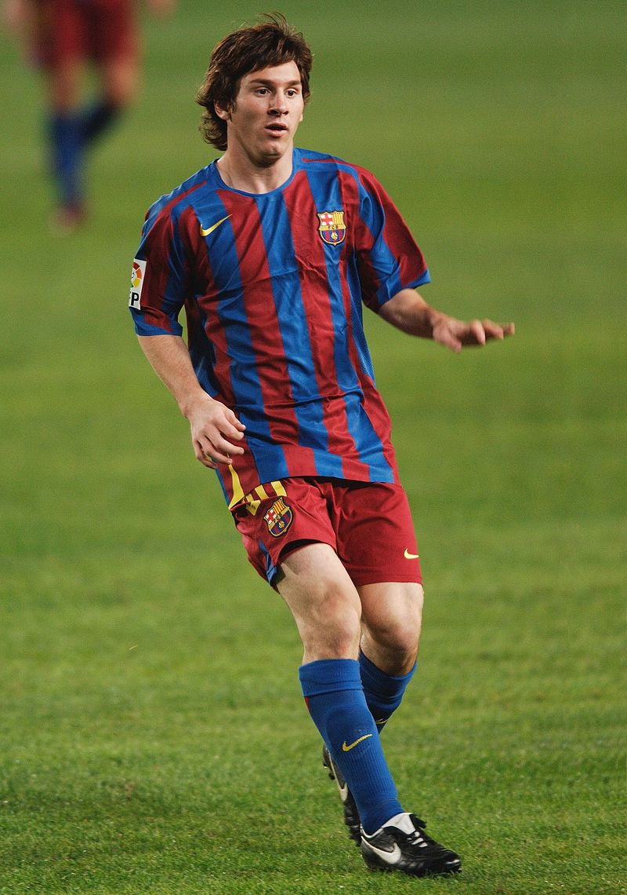
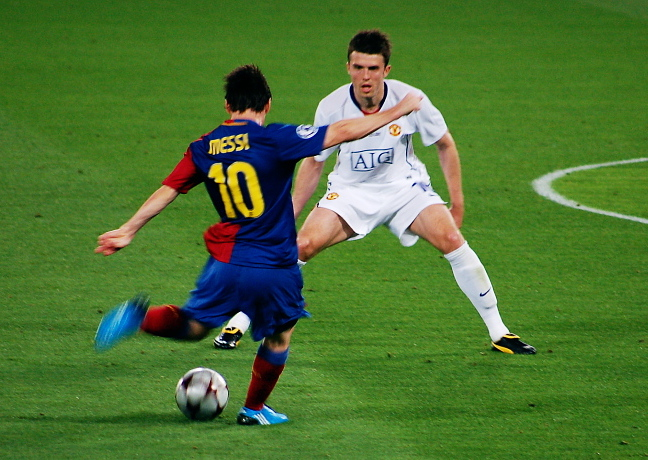
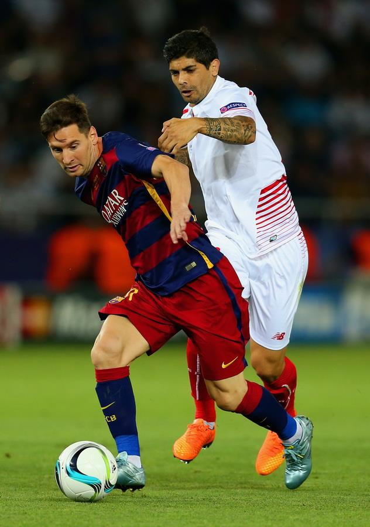

EL Mondo
.jpeg)
Career Club:
During the 2003–04 season, his fourth with Barcelona, Messi rapidly progressed through the club's ranks, debuting for four youth teams in a single campaign.
After being named player of the tournament in four international pre-season competitions with the Juveniles B, he played only one official match with the team before being promoted to the Juveniles A, where he scored 18 goals in 11 league games. Messi was then one of several youth players called up to strengthen a depleted first team during the international break.
French winger Ludovic Giuly explained how Messi caught the eye in a training session with Frank Rijkaard's first team: "He destroyed us all... They were kicking him all over the place to avoid being ridiculed by this kid, he just got up and kept on playing. He would dribble past four players and score a goal. Even the team's starting centre-backs were nervous. He was an alien."
At 16 years, four months, and 23 days old, Messi made his first team debut when he came on in the 75th minute during a friendly against José Mourinho's Porto on 16 November 2003.
His performance, creating two chances and a shot on goal, impressed the technical staff, and he subsequently began training daily with the club's reserve side, Barcelona B, as well as weekly with the first team.
After his first training session with the senior squad, Barça's new star player, Ronaldinho, told his teammates that he believed the 16-year-old would become an even better player than himself. Ronaldinho soon befriended Messi, whom he called "little brother", which greatly eased his transition into the first team.

On 24 June, his 18th birthday, Messi signed his first contract as a senior team player. It made him a Barcelona player until 2010, two years less than his previous contract, but his buyout clause increased to €150 million. His breakthrough came two months later, on 24 August, during the Joan Gamper Trophy, Barcelona's pre-season competition.
A starter for the first time, he gave a well-received performance against Fabio Capello's Juventus, receiving an ovation from the Camp Nou. Capello sought to take Messi to Juventus on loan, but Inter Milan offered to pay his €150 million buyout clause and triple his wages.
According to then-president Joan Laporta, it was the only time the club faced a real risk of losing Messi, but he ultimately decided to stay. On 16 September, his contract was updated for the second time in three months and extended to 2014.
Due to issues regarding his legal status in the Royal Spanish Football Federation, Messi missed the start of La Liga, but on 26 September, he acquired Spanish citizenship and became eligible to play. Wearing the number 19 shirt, he gradually established himself as the first-choice right winger, forming an attacking trio with Ronaldinho and striker Samuel Eto'o.
He was in the starting line-up in major matches like his first Clásico against rivals Real Madrid on 19 November, as well as Barcelona's away victory over Chelsea in the last 16 round of the Champions League, which came on back of an intense period of rivalry between the clubs leading a resentful Messi to state, "We would rather play Arsenal, Manchester United or anyone else than be on the pitch with Chelsea."
After he had scored 8 goals in 25 games, including his first in the Champions League, in a 5–0 win over Panathinaikos on 2 November 2005, his season ended prematurely during the return leg against Chelsea on 7 March 2006, when he suffered a torn hamstring. Messi worked to regain fitness in time for the Champions League final, but on 17 May, the day of the final, he was eventually ruled out. He was so disappointed that he did not celebrate his team's victory over Arsenal in Paris, something he later came to regret.
After two unsuccessful seasons, Barcelona were in need of an overhaul, leading to the departure of Rijkaard and Ronaldinho. Upon the latter's departure, Messi was given the number 10 shirt. He signed a new contract in July with an annual salary of €7.8 million, becoming the club's highest-paid player. Ahead of the new season, a major concern remained his frequent muscular injuries, which had left him side-lined for a total of eight months between 2006 and 2008.
To combat the problem, the club implemented new training, nutrition, and lifestyle regimens, and assigned him a personal physiotherapist, who would travel with him during call-ups for the Argentina national team.
As a result, Messi remained virtually injury-free during the next four years, allowing him to reach his full potential. Despite his injuries early in the year, his performances in 2008 saw him again voted runner-up for the Ballon d'Or and the FIFA World Player of the Year award, both times behind Cristiano Ronaldo.

In his first uninterrupted campaign, the 2008–09 season, he scored 38 goals in 51 games, contributing alongside Eto'o and winger Thierry Henry to a total of 100 goals in all competitions, a record at the time for the club. During his first season under Barcelona's new manager, former captain Pep Guardiola, Messi played mainly on the right wing, like he had under Rijkaard, though this time as a false winger with the freedom to cut inside and roam the centre.
During the Clásico on 2 May 2009, however, he played for the first time as a false nine, positioned as a centre-forward but dropping deep into midfield to link up with Xavi and Andrés Iniesta. He set up his side's first goal and scored twice to end the match in an emphatic 6–2 victory, the team's greatest-ever score at Real Madrid's Santiago Bernabéu Stadium.
Returning to the wing, he played his first final since breaking into the first team on 13 May, scoring once and assisting a second goal as Barcelona defeated Athletic Bilbao 4–1 to win the Copa del Rey. With 23 league goals from Messi that season, Barcelona became La Liga champions three days later and achieved its fifth double.
His team's prosperity continued into the second half of 2009, as Barcelona became the first club to achieve the sextuple, winning six top-tier trophies in a single year.
After victories in the Supercopa de España and UEFA Super Cup in August, Barcelona won the FIFA Club World Cup against Estudiantes de La Plata on 19 December, with Messi scoring the winning 2–1 goal with his chest. At 22 years old, Messi won the Ballon d'Or and the FIFA World Player of the Year award, both times by the biggest voting margin in each trophy's history.
The new year, however, started on a less positive note for Barcelona, as they were knocked out of the Copa del Rey by Sevilla in the Round of 16. Unsatisfied with his position on the right wing – with the club's summer acquisition Zlatan Ibrahimović occupying the central forward role – Messi resumed playing as a false nine in early 2010, beginning with a Champions League last 16-round match against VfB Stuttgart. After a first-leg draw, Barcelona won the second leg 4–0 with two goals and an assist from Messi. At that point, he effectively became the tactical focal point of Guardiola's team, and his goalscoring rate increased.
Messi scored a total of 47 goals in all competitions that season, equaling Ronaldo's club record from the 1996–97 campaign. He scored all of his side's four goals in the Champions League quarter-final against Arsenal on 6 April while becoming Barcelona's all-time top scorer in the competition.
Although Barcelona were eliminated in the Champions League semi-finals by the eventual champions, Inter Milan, Messi finished the season as top scorer (with 8 goals) for the second consecutive year. As the league's top scorer with 34 goals (again tying Ronaldo's record), he helped Barcelona win a second consecutive La Liga trophy with only a single defeat and earned his first European Golden Shoe.
Messi secured Barcelona's first trophy of the 2010–11 campaign, the Supercopa de España, by scoring a hat-trick in his side's second-leg 4–0 victory over Sevilla, after a first-leg defeat.
Assuming a playmaking role, he was again instrumental in a Clásico on 29 November 2010, the first with José Mourinho in charge of Real Madrid, as Barcelona defeated their rivals 5–0. Messi helped the team achieve 16 consecutive league victories, a record in Spanish football, concluding with another hat-trick against Atlético Madrid on 5 February 2011.
His club performances in 2010 earned him the inaugural FIFA Ballon d'Or, an amalgamation of the Ballon d'Or and the FIFA World Player of the Year award, though his win was met with some criticism due to his lack of success with Argentina at the 2010 FIFA World Cup. Under the award's old format, he would have placed just outside the top three, owing his win to the votes from the international coaches and captains.
Towards the end of the season, Barcelona played four Clásicos in the span of 18 days. A league match on 16 April ended in a draw after a penalty from Messi. After Barcelona lost the Copa del Rey final four days later, Messi scored both goals in his side's 2–0 win in the first leg of the Champions League semi-finals in Madrid, the second of which – a slaloming dribble past three Real players – was acclaimed as one of the best ever in the competition. Although he did not score, he was again important in the second-leg draw that sent Barcelona through to the Champions League final,where they faced Manchester United in a repeat of the final two years earlier.
As the competition's top scorer for the third consecutive year, with 12 goals, Messi gave a man-of-the-match performance at Wembley on 28 May, scoring the match-winning goal of Barça's 3–1 victory.Barcelona won a third consecutive La Liga title.
In addition to his 31 goals, Messi was also the league's top assist provider with 18. He finished the season with 53 goals in all competitions, becoming Barcelona's all-time single-season top scorer and the first player in Spanish football to reach the 50-goal benchmark.
.jpg ) As Messi maintained his goalscoring form into the second half of the season, the year 2012 saw him break several longstanding records. On 7 March, two weeks after scoring four goals in a league fixture against Valencia, he scored five times in a Champions League last 16-round match against Bayer Leverkusen, an unprecedented achievement in the history of the competition.
As Messi maintained his goalscoring form into the second half of the season, the year 2012 saw him break several longstanding records. On 7 March, two weeks after scoring four goals in a league fixture against Valencia, he scored five times in a Champions League last 16-round match against Bayer Leverkusen, an unprecedented achievement in the history of the competition.
In addition to being the joint top assist provider with five assists, this feat made him top scorer with 14 goals, tying José Altafini's record from the 1962–63 season, as well as becoming only the second player after Gerd Müller to be top scorer in four campaigns. Two weeks later, on 20 March, Messi became the top goalscorer in Barcelona's history at 24 years old, overtaking the 57-year record of César Rodríguez's 232 goals with a hat-trick against Granada.
Despite Messi's individual form, Barcelona's four-year cycle of success under Guardiola – one of the greatest eras in the club's history – drew to an end. Although Barcelona won the Copa del Rey against Athletic Bilbao on 25 May, its 14th title of that period, the team lost the league to Real Madrid and was eliminated in the Champions League semi-finals by the eventual champions, Chelsea, with Messi sending a crucial second-leg penalty kick against the crossbar.
In Barça's last home league match on 5 May, against Espanyol, Messi scored all four goals before approaching the bench to embrace Guardiola, who had announced his resignation as manager. He finished the season as league top scorer in Spain and Europe for a second time, with 50 goals, a La Liga record, while his 73 goals in all competitions surpassed Gerd Müller's 67 goals in the 1972–73 Bundesliga season, making him the single-season top scorer in the history of European club football.
Under manager Tito Vilanova, who had first coached him aged 14 at La Masia, Messi helped the club achieve its best-ever start to a La Liga season during the second half of 2012, amassing 55 points by the competition's midway point, a record in Spanish football.
A double scored on 9 December against Real Betis saw Messi break two longstanding records: he surpassed César Rodríguez's record of 190 league goals, becoming Barcelona's all-time top scorer in La Liga, and Gerd Müller's record of most goals scored in a calendar year, overtaking his 85 goals scored in 1972 for Bayern Munich and West Germany.
Messi sent Müller a number 10 Barcelona shirt, signed "with respect and admiration", after breaking his 40-year record. At the close of the year, Messi had scored a record 91 goals in all competitions for Barcelona and Argentina.
Although FIFA did not acknowledge the achievement, citing verifiability issues, he received the Guinness World Records title for most goals scored in a calendar year. As the odds-on favourite, Messi again won the FIFA Ballon d'Or, becoming the only player in history to win the Ballon d'Or four times.

2015–16: domestic success:
Messi opened the 2015–16 season by scoring twice from free kicks in Barcelona's 5–4 victory (after extra time) over Sevilla in the UEFA Super Cup.
On 16 September, he became the youngest player to make 100 appearances in the UEFA Champions League in a 1–1 away draw to Roma. After a knee injury, he returned to the pitch on 21 November, making a substitute appearance in Barcelona's 4–0 away win over rivals Real Madrid in El Clásico.
Messi capped off the year by winning the 2015 FIFA Club World Cup final on 20 December, collecting his fifth club trophy of 2015 as Barcelona defeated River Plate 3–0 in Yokohama. On 30 December, Messi scored on his 500th appearance for Barcelona, in a 4–0 home win over Real Betis.
On 11 January 2016, Messi won the FIFA Ballon d'Or for a record fifth time in his career.
On 3 February, he scored a hat-trick in Barcelona's 7–0 win against Valencia in the first leg of the Copa del Rey semi-final at the Camp Nou. In a 6–1 home win against Celta Vigo in the league, Messi assisted Suárez from a penalty kick. Some saw it as "a touch of genius", while others criticised it as being disrespectful to the opponent.
The Celta players never complained and their coach defended the penalty, stating, "Barca's forwards are very respectful." The penalty routine has been compared to that of Barça icon Johan Cruyff in 1982, who was battling lung cancer, leading many fans to indicate that the penalty was a tribute to him. Cruyff himself was "very happy" with the play, insisting "it was legal and entertaining".
On 17 February, Messi reached his 300th league goal in a 3–1 away win against Sporting de Gijón.
A few days later, he scored both goals in Barcelona's 2–0 win against Arsenal at the Emirates Stadium, in the first leg of the 2015–16 UEFA Champions League round of 16, with the second goal being Barcelona's 10,000th in official competitions. On 17 April, Messi ended a five-match scoring drought with his 500th senior career goal for club and country in Barcelona's 2–1 home loss to Valencia.
Messi finished the 2015–16 season by setting up both goals in Barcelona's 2–0 extra time win over Sevilla in the 2016 Copa del Rey final, at the Vicente Calderón Stadium, on 22 May 2016, as the club celebrated winning the domestic double for the second consecutive season. In total, Messi scored 41 goals as Barcelona's attacking trio managed a Spanish record of 131 goals throughout the season, breaking the record they had set the previous season.
Messi opened the 2016–17 season by lifting the 2016 Supercopa de España as Barcelona's captain in the absence of the injured Andrés Iniesta;
he set-up Munir's goal in a 2–0 away win over Sevilla in the first leg on 14 August, and subsequently scored in a 3–0 win in the return leg on 17 August. Three days later, he scored two goals as Barcelona won 6–2 against Real Betis in the opening game of the 2016–17 La Liga season.
On 13 September, Messi scored his first hat-trick of the season in the opening game of the 2016–17 UEFA Champions League campaign against Celtic in a 7–0 victory; this was also Messi's sixth hat-trick in the Champions League, the most by any player.
A week later, Messi sustained a groin injury in a 1–1 draw against Atlético Madrid and was ruled out with injury for three weeks. He marked his return with a goal, scoring three minutes after coming off the bench in a 4–0 home win over Deportivo de La Coruña, on 16 October.
Three days after this, he netted his thirty-seventh club hat-trick as Barcelona defeated Manchester City 4–0. On 1 November, Messi scored his 54th Champions League group stage goal in Barcelona's 3–1 away loss to Manchester City, surpassing the previous record of 53 goals held by Raúl.
.jpeg) Messi finished the year with 51 goals, making him Europe's top scorer, one ahead of Zlatan Ibrahimović.
Messi finished the year with 51 goals, making him Europe's top scorer, one ahead of Zlatan Ibrahimović.
After placing second in the 2016 Ballon d'Or, on 9 January 2017 Messi also finished in second place – behind Cristiano Ronaldo once again – in the 2016 Best FIFA Men's Player Award.
On 11 January, Messi scored from a free-kick in Barcelona's 3–1 victory against Athletic Bilbao in the second leg of the round of 16 of the Copa del Rey, which enabled Barcelona to advance to the quarter-finals of the competition; with his 26th goal from a free-kick for Barcelona in all competitions, he equalled the club's all-time record, which had previously been set by Ronald Koeman.
In his next league match, on 14 January, Messi scored in a 5–0 win against Las Palmas; with this goal, he equalled Raúl's record for the most teams scored against in La Liga (35).
On 4 February 2017, Messi scored his 27th free-kick for Barcelona in a 3–0 home win over Athletic Bilbao in the league, overtaking Koeman as the club's all-time top-scorer from free-kicks. On 23 April, Messi scored twice in a 3–2 away win over Real Madrid. His game-winning goal in stoppage time was his 500th for Barcelona.
His memorable celebration saw him taking off his Barcelona shirt and holding it up to incensed Real Madrid fans – with his name and number facing the crowd. On 27 May, Messi scored a goal and set up another for Paco Alcácer in the 2017 Copa del Rey final, helping Barcelona to a 3–1 victory over Alavés, and was named Man of the Match.
In total, Messi finished the 2016–17 season with 54 goals, while his 37 goals in La Liga saw him claim both the Pichichi and European Golden Boot Awards for the fourth time in his career.
Messi opened the 2017–18 season by converting a penalty in Barcelona's 1–3 first leg home defeat to Real Madrid in Supercopa de España.
Thereby, Messi also extended his El Clásico goalscoring record with the goal being his 24th official and 25th overall. On 9 September, Messi scored his first hat-trick of the 2017–18 league campaign, against Espanyol in Derbi barceloní, thus helping to secure a 5–0 home victory for Blaugrana over local rivals.
Messi netted twice against Gianluigi Buffon, on 12 September, as Barça defeated the last season's Italian champions Juventus 3–0 at home in the UEFA Champions League. On 19 September, Messi found the net four times in a 6–1 trashing of Eibar at the Camp Nou in La Liga.
Three weeks later, on 1 October, Messi surpassed his former teammate Carles Puyol to become the third highest appearance maker in the club's history, as he helped Barça defeat Las Palmas 3–0 by assisting Sergio Busquets' opener and later adding two himself in his 594th official game for the club; the league game was played behind closed doors at the Camp Nou due to violence in Catalonia relating to an ongoing independence referendum.
On 18 October, in his 122nd European club appearance, Messi scored his 97th UEFA Champions League goal, and his 100th in all UEFA club competitions, in a 3–1 home victory over Olympiacos. Messi became only the second player after Cristiano Ronaldo to reach this century milestone, but accomplished it in 21 fewer appearances than the Portuguese counterpart.
On 4 November, he made his 600th appearance for Barcelona in a 2–1 home win over Sevilla in La Liga. Following the reception of his fourth Golden Boot, Messi signed a new deal with Barcelona on 25 November, keeping him with the club through the 2020–21 season. His buyout clause was set at €700 million.
On 7 January 2018, Messi made his 400th La Liga appearance with Barcelona in a 3–0 home win over Levante, marking the occasion with his 144th league assist and 365th league goal for the club, the latter of which saw him equal Gerd Müller's record for the most league goals scored for the same club in one of Europe's top five divisions. A week later, he broke the record, scoring his 366th La Liga goal from a free kick in a 4–2 away win against Real Sociedad.
On 4 March, he scored his 600th senior career goal from a free kick in a 1–0 home win over Atlético Madrid, in La Liga. On 14 March, Messi scored his 99th and 100th Champions League goals in a 3–0 home win over Chelsea, becoming only the second player after Cristiano Ronaldo to reach this landmark, in fewer appearances, at a younger age and having taken fewer shots than his Portuguese counterpart.
His opening goal, which came after only two minutes and eight seconds, was also the fastest of his career, as Barcelona advanced to the quarter-finals of the competition for the eleventh consecutive season. On 7 April, he scored a hat-trick in a 3–1 win over Leganés including his sixth goal scored from a free-kick for the season, matching the record set by former teammate Ronaldinho.
He once again finished the season as the top scorer in La Liga, with 34 goals, which also saw him win his fifth Golden Shoe award.On 21 April, Messi scored Barcelona's second goal – his 40th of the season – in a 5–0 win over Sevilla in the 2018 Copa del Rey final, later also setting up Suárez's second goal; this was Barcelona's fourth consecutive title and their 30th overall.
On 29 April, Messi scored a hat-trick in a 4–2 away win over Deportivo de La Coruña, which saw Barcelona claim their 25th league title. On 9 May, Messi scored as Barcelona defeated Villarreal 5–1 to set the longest unbeaten streak (43 games) in La Liga history.
2018–19: captaincy, 10th La Liga title, and a record sixth Golden Boot:
.jpeg) With the departure of former captain Andrés Iniesta in May 2018, Messi was named the team's new captain for the following season.
With the departure of former captain Andrés Iniesta in May 2018, Messi was named the team's new captain for the following season.
On 12 August, he lifted his first title as Barcelona's captain, the Supercopa de España, following a 2–1 victory over Sevilla. On 19 August, Messi scored twice in helping Barcelona defeat Alavés 3–0 in their first La Liga match of the season, with his first goal, a free kick that he rolled under the jumping Alavés wall, making history in being Barcelona's 6000th goal in La Liga.
On 18 September, Messi scored a hat-trick in a 4–0 home win over PSV Eindhoven in Barcelona's opening Champions League group stage match of the season, setting a new record for most hat-tricks in the competition, with eight.
On 20 October, Messi scored in a 4–2 home win over Sevilla, but was later forced off in the 26th minute after falling awkwardly and injuring his right arm; tests later confirmed that he had fractured his radial bone, ruling him out for approximately three weeks.
On 8 December, Messi scored two free kicks – his ninth and tenth goals from set pieces during the calendar year – in a 4–0 away win over Derbi barceloní rivals Espanyol in La Liga; this was the first time ever that he had managed such a feat in the league. His first goal was also his 10th league goal of the season, making him the first player ever to reach double figures in La Liga for 13 consecutive seasons.
On 13 January 2019, Messi scored his 400th La Liga goal in his 435th league appearance in a 3–0 home win over Eibar, becoming the first player ever to manage this tally in just one of Europe's top five leagues.
On 2 February, Messi scored twice in a 2–2 draw against Valencia, with his first goal coming from the penalty spot, his 50th La Liga penalty goal; as such, he became only the third player in La Liga history after Cristiano Ronaldo and Hugo Sánchez to score 50 penalties in the competition. Later that month, the club admitted they had begun preparations for Messi's future retirement.
On 23 February, Messi scored the 50th hat-trick of his career and also provided an assist for Suárez, as he helped Barcelona come from behind to achieve a 4–2 away victory over Sevilla in La Liga; the goal was also his 650th career goal for club and country at senior level.
On 16 April, Messi scored twice in a 3–0 home victory over Manchester United in the second leg of the Champions League quarter-finals to give Barcelona a 4–0 aggregate win, which saw Barcelona progress to the semi-finals of the competition for the first time since 2015; these were also his first goals in the Champions League quarter-finals since 2013.
On 27 April, Messi came off the bench and scored the only goal in a 1–0 home win over Levante, which allowed Barcelona to clinch the league title; this was his 450th La Liga appearance, and his first league title as Barcelona's captain.
On 1 May, Messi scored twice in a 3–0 home win over Liverpool in the first leg of the Champions League semi-finals; his second goal of the match, a 35-yard free kick, was the 600th senior club goal of his career, all of which had been scored with Barcelona. In the return leg six days later at Anfield, Barcelona suffered a 4–0 away defeat, which saw Liverpool advance to the final 4–3 on aggregate.
On 19 May, in Barcelona's final La Liga match of the season, Messi scored twice in a 2–2 away draw against Eibar (his 49th and 50th goals of the season in all competitions), which saw him capture his sixth Pichichi Trophy as the league's top scorer, with 36 goals in 34 appearances; with six titles, he equalled Zarra as the player with the most top-scorer awards in La Liga.
He also captured his sixth Golden Shoe award, and a record third consecutive award since the 2016–17 season. On 25 May, Messi scored his final goal of the season in a 2–1 defeat to Valencia in the 2019 Copa del Rey final.
On 5 August 2019, it was announced that Messi would miss Barcelona's US tour after sustaining a right calf injury. On 19 August, Messi's chipped goal from the edge of the box against Real Betis was nominated for the 2019 FIFA Puskás Award.
Later that month, he suffered another setback following the return of his calf injury, which ruled him out of the opening game of the season; as a result, he was sidelined indefinitely, and was only expected to return to action with Barcelona after the September international break.
On 2 September, Messi was shortlisted as one of the three finalists for both the 2019 FIFA Puskás Award and the 2019 Best FIFA Men's Player Award, with Messi winning the latter on 23 September.
 Messi made his first appearance of the season on 17 September, and on 6 October he scored his first goal of the season with a free kick in a 4–0 home win over Sevilla; this was his 420th goal in La Liga, which saw him break Cristiano Ronaldo's record of 419 goals scored in Europe's top five leagues.
Messi made his first appearance of the season on 17 September, and on 6 October he scored his first goal of the season with a free kick in a 4–0 home win over Sevilla; this was his 420th goal in La Liga, which saw him break Cristiano Ronaldo's record of 419 goals scored in Europe's top five leagues.
On 23 October, Messi scored his first Champions League goal of the season in a 2–1 away win over Slavia Prague, becoming the first player to score in 15 consecutive Champions League seasons (excluding qualifying rounds).
He also equalled Raúl and Cristiano Ronaldo's shared record of the most sides scored against in the competition (33). On 29 October, Messi scored in a 5–1 home win over Real Valladolid in La Liga; his first goal – a set piece from 35 yards – was the 50th free-kick of his career.
His goals (608) also saw him overtake Cristiano Ronaldo's senior goal tally (606) at club level. On 9 November, Messi scored three goals (including two free kicks) in a 4–1 home win against Celta Vigo. This was his 34th hat-trick in La Liga, equalling Cristiano Ronaldo's Spanish top-flight record.
On 27 November, in what was his 700th appearance for Barcelona, Messi scored one goal and assisted two more in a 3–1 home win over Borussia Dortmund in the UEFA Champions League. Dortmund were the 34th team he had scored against in the competition, breaking the previous record of 33 held by Cristiano Ronaldo and Raúl.
On 2 December, Messi was awarded a record-breaking sixth Ballon d'Or. On 8 December, Messi scored his record-breaking 35th hat-trick in La Liga with three goals in Barcelona's 5–2 home win over Mallorca.
On 22 February 2020, Messi scored four goals in a 5–0 home win over Eibar in La Liga. On 14 June, he scored in a 4–0 away win against Mallorca, becoming the first player ever in La Liga to score 20 goals or more in 12 consecutive seasons.
On 30 June, he scored a panenka in a 2–2 home draw against Atlético Madrid in La Liga, to reach his 700th goal in his senior career for Barcelona and Argentina.
On 11 July, Messi provided his 20th assist of the league season for Arturo Vidal in a 1–0 away win over Real Valladolid, equalling Xavi's record of 20 assists in a single La Liga season from 2008 to 2009; with 22 goals, he also became only the second player ever, after Thierry Henry in the 2002–03 FA Premier League season with Arsenal (24 goals and 20 assists), to record at least 20 goals and 20 assists in a single league season in one of Europe's top-five leagues.
Following his brace in a 5–0 away win against Alavés in the final match of the season on 20 May, Messi finished the season as both the top scorer and top assist provider in La Liga, with 25 goals and 21 assists respectively, which saw him win his record seventh Pichichi trophy, overtaking Zarra; however, Barcelona missed out on the league title to Real Madrid.
On 9 August, in the Champions League round of 16 second leg versus Napoli at the Camp Nou, Messi scored the second goal and earned a penalty which led to a third goal and led his side to a 3–1 home victory and qualified 4–2 on aggregate for the quarter-finals against Bayern Munich.
On 15 August, Messi suffered his worst defeat as a player as Bayern Munich beat Barcelona 8–2 in a one-off tie in Lisbon, leading to another disappointing exit from the Champions League.
international Career:
2016–2017: third Copa América final, first retirement, and return:
Messi's place in Argentina's Copa América Centenario squad was initially put in jeopardy when he sustained a back injury in a 1–0 friendly win over Honduras in a pre-Copa América warm-up match on 27 May 2016.
It was later reported that he had suffered a deep bruise in his lumbar region. He was later left on the bench in Argentina's 2–1 opening win over defending champions Chile on 6 June due to concerns regarding his fitness.
Although Messi was declared match-fit for his nation's second group match against Panama on 10 June, Martino left him on the bench once again; he replaced Augusto Fernández in the 61st minute and subsequently scored a hat-trick in 19 minutes, also starting the play which led to Sergio Agüero's goal, as the match ended in a 5–0 victory, sealing Argentina's place in the quarter-finals of the competition; he was elected man of the match for his performance
.
On 18 June, in the quarter-final of the Copa América against Venezuela, Messi produced another man of the match performance, assisting two goals and scoring another in a 4–1 victory, which enabled him to equal Gabriel Batistuta's national record of 54 goals in official international matches.
This record was broken three days later when Messi scored a free kick in a 4–0 semi-final win against hosts the United States; he also assisted two goals during the match as Argentina sealed a place in the final of the competition for a second consecutive year, and was named man of the match once again.
During a repeat of the previous year's final on 26 June, Argentina once again lost to Chile on penalties after a 0–0 deadlock, resulting in Messi's third consecutive defeat in a major tournament final with Argentina, and his fourth overall.
After the match, Messi, who had missed his penalty in the shootout, announced his retirement from international football. He stated, "I tried my hardest. The team has ended for me, a decision made."
Chile coach Juan Antonio Pizzi said after the match, "My generation can't compare him to Maradona that's for my generation, because of what Maradona did for Argentine football. But I think the best player ever played today here in the United States."
Messi finished the tournament as the second highest scorer, behind Eduardo Vargas, with five goals, and was the highest assist provider with four assists, also winning more Man of the Match awards than any other player in the tournament (3); he was named to the team of the tournament for his performances, but missed out on the Golden Ball Award for best player, which went to Alexis Sánchez.
Following his announcement, a campaign began in Argentina for Messi to change his mind about retiring.
He was greeted by fans with signs like "Don't go, Leo" when the team landed in Buenos Aires. President of Argentina Mauricio Macri urged Messi not to quit, stating, "We are lucky, it is one of life's pleasures, it is a gift from God to have the best player in the world in a footballing country like ours... Lionel Messi is the greatest thing we have in Argentina and we must take care of him."
Mayor of Buenos Aires Horacio Rodríguez Larreta unveiled a statue of Messi in the capital to convince him to reconsider retirement. The campaign also continued in the streets and avenues of the Argentine capital, with about 50,000 supporters going to the Obelisco de Buenos Aires on 2 July, using the same slogan.
2021–2022: Copa América and World Cup triumphs:
.jpeg) On 14 June 2021, Messi scored from a free kick in a 1–1 draw against Chile in Argentina's opening group match of the 2021 Copa América in Brazil. On 21 June, Messi played in his 147th match as he equalled Javier Mascherano's record for most appearances for Argentina in a 1–0 win over Paraguay in their third game of the tournament.
On 14 June 2021, Messi scored from a free kick in a 1–1 draw against Chile in Argentina's opening group match of the 2021 Copa América in Brazil. On 21 June, Messi played in his 147th match as he equalled Javier Mascherano's record for most appearances for Argentina in a 1–0 win over Paraguay in their third game of the tournament.
A week later, he broke the record when he featured in a 4–1 win against Bolivia in his team's final group match, assisting Papu Gómez's opening goal and later scoring two. On 3 July, Messi assisted twice and scored from a free-kick in a 3–0 win over Ecuador in the quarter-finals of the competition.
On 6 July, in a 1–1 draw in the semi-finals against Colombia, Messi made his 150th appearance for his country and registered his fifth assist of the tournament, a cut-back for Lautaro Martínez, matching his record of nine goal contributions in a single tournament from five years earlier; he later scored his spot kick in Argentina's eventual 3–2 penalty shoot-out victory to progress to his fifth international final. On 10 July, Argentina defeated hosts and defending champions Brazil 1–0 in the final, giving Messi his first major international title and Argentina's first since 1993, as well as his nation's joint record 15th Copa América overall.
Messi was directly involved in nine out of the 12 goals scored by Argentina, scoring four and assisting five; he was named the player of the tournament for his performances, an honour he shared with Neymar. He also finished as top scorer with four goals tied with Colombia's Luis Díaz, with the Golden Boot awarded to Messi as he had more assists.
On 9 September, Messi scored a hat-trick in a 3–0 home win over Bolivia in a 2022 World Cup qualifier which also moved him above Pelé as South America's top male international scorer with 79 goals.
In the 2022 Finalissima, the third edition of the CONMEBOL–UEFA Cup of Champions, at Wembley on 2 June 2022, Messi assisted twice in a 3–0 victory against Italy and was named player of the match, securing his second trophy for Argentina at the senior level. Messi then followed this on 6 June with all five Argentina goals in a 5–0 victory in a friendly win over Estonia, overtaking Ferenc Puskás among the all-time international men's top scorers.
At the 2022 FIFA World Cup in Qatar, Messi scored a penalty in Argentina's opening game, a 2–1 defeat to Saudi Arabia, before scoring with a low 20-yard strike in their next match against Mexico in which Argentina won 2–0, also recording an assist on Enzo Fernández's goal.
In the last 16 game against Australia, Messi scored the opening goal in Argentina's 2–1 win in what was his 1,000th senior career appearance, and became the most-capped male South American (CONMEBOL member) footballer of all time, surpassing the previous record set by Ecuador's Iván Hurtado, as well as surpassing and equalling several other FIFA World Cup and national team records.
In the quarter-final against the Netherlands, Messi assisted Argentina's first goal for Nahuel Molina with a reverse pass and then scored a penalty as the game finished 2–2 after extra time. Argentina won 4–3 in the penalty shootout, with Messi scoring the first penalty.
In the semi-final against Croatia, Messi made a record-equalling 25th World Cup finals appearance, drawing level with Germany's Lothar Matthäus, and scored the opening goal with a penalty before he assisted Argentina's third goal scored by Julián Álvarez in a 3–0 win; with his 11th World Cup goal, Messi overtook Batistuta to become Argentina's all-time top-scorer at the World Cup. Argentina advanced to the final against France, with Messi stating that it would be his final World Cup appearance.
In the 2022 FIFA World Cup final on 18 December, Messi made his record 26th World Cup match appearance at Lusail Stadium. He scored Argentina's opening goal with a penalty, becoming in the process the first player since the last-16 round was introduced in 1986 to score a goal in every round of a single World Cup edition. After Argentina's eventual two-goal lead was erased by France forward Kylian Mbappé, who scored twice inside two minutes, Messi would score again in extra-time to restore Argentina's lead, before Mbappé again drew France level. Tied 3–3 after extra-time, the match went to a penalty shoot-out. Messi scored Argentina's first goal in the shoot-out, with Argentina eventually winning 4–2, ending the nation's 36-year wait for the trophy.
Messi received the Golden Ball for player of the tournament, becoming the first player to win it twice. He finished second in the Golden Boot race with seven goals in seven games, one behind Mbappé. With his appearance and two goals in the final, Messi overtook Matthaüs as the player with most appearances at the World Cup (26), and Pelé as the player with most direct goal contributions at the World Cup (21 – 13 goals and 8 assists).
The championship game was widely acclaimed as one of the best of all time, with media coverage heavily framing it as a duel between Messi and Mbappé. Following the game, Messi confirmed that he had no plans to retire from the national team, saying "I want to continue playing as a champion".